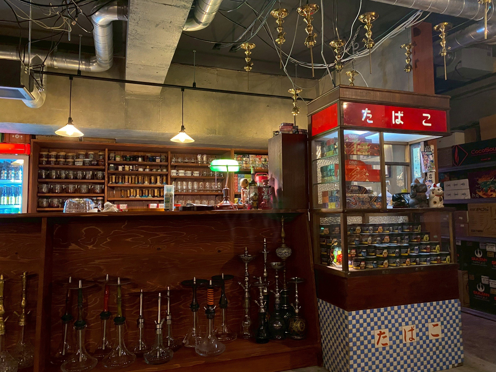

── 記録_008 ──
開店前夜
開店準備は、思っていたよりずっとギリギリだった。
看板はついた。
カウンターにはグラスが並んだ。
棚には道具が収まった。
小上がりにも座れるようになった。
でも、終わってはいなかった。
深夜になっても、まだ作業をしていた。
段ボールを開けて、
足りないものを探して、
届いたフレーバーを瓶に詰め替えた。
ひとつずつ、ラベルを貼って。
蓋を閉めた。
棚に並べた。
また別の袋を開けた。
甘い匂いが混ざっていた。
果物の匂い。
ミントの匂い。
知らない花みたいな匂い。
店の中が、少しずつ煙羅煙羅の匂いになっていった。

開店前夜。道具とフレーバーが並び始めたカウンター。
誰も「終わった」とは言わなかった。
たぶん、まだ終わっていなかったからだと思う。
時計を見たら、もう日付が変わっていた。
そのとき、誰かが言った。
「作るか。」
それが何を指しているのか、すぐにわかった。
試しに、シーシャを一台だけ焚いた。
炭を置いて、蒸らして、吸って、煙を吐いた。
はじめて、この場所に煙が入った。
白い煙は、天井の配管の下をゆっくり流れて、
照明の光に少しだけ引っかかって、
それから奥の方へ消えていった。
誰かが、
「やっと店っぽくなった」
と言った。
でも、自分は少し違うと思った。
店っぽくなったんじゃない。
この場所が、煙を覚えたんだと思った。
しばらくして、誰も吸っていないのに、
カウンターの向こうから、細い煙が上がっているのが見えた。
火はついていなかった。
炭も置いていなかった。
水の音もしなかった。
ただ、煙だけがあった。
近づくと、すぐに消えた。
そのあと、瓶に貼るために置いていた白いラベルに、
見覚えのない線が一本増えていた。
煙が通った跡みたいな線だった。
明日、店が開く。
ここに人が来る。
ここで話す。
ここで笑う。
ここで黙る。
ここで煙を吐く。
たぶん、この場所はそれを待っている。
開店前夜、普通に朝まで準備してた気がする。フレーバーを瓶に詰め替えて、ラベル貼って、棚に並べて。それで誰かが「一台作るか」って言って、初めて店でシーシャ焚いたんだよね。あの瞬間は覚えてる。